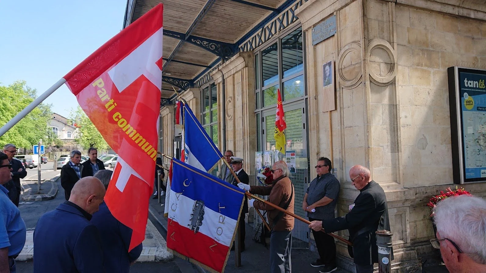
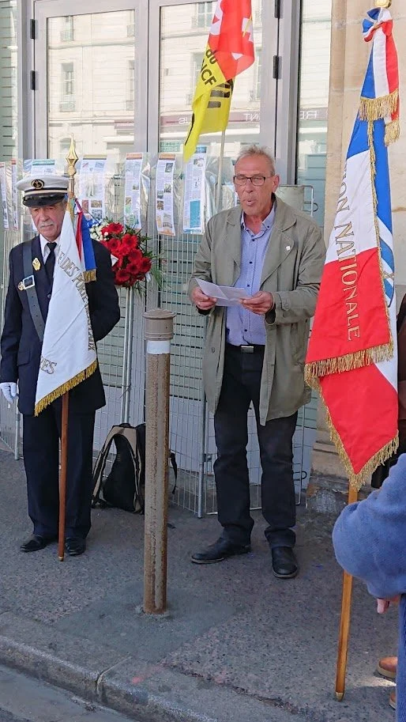
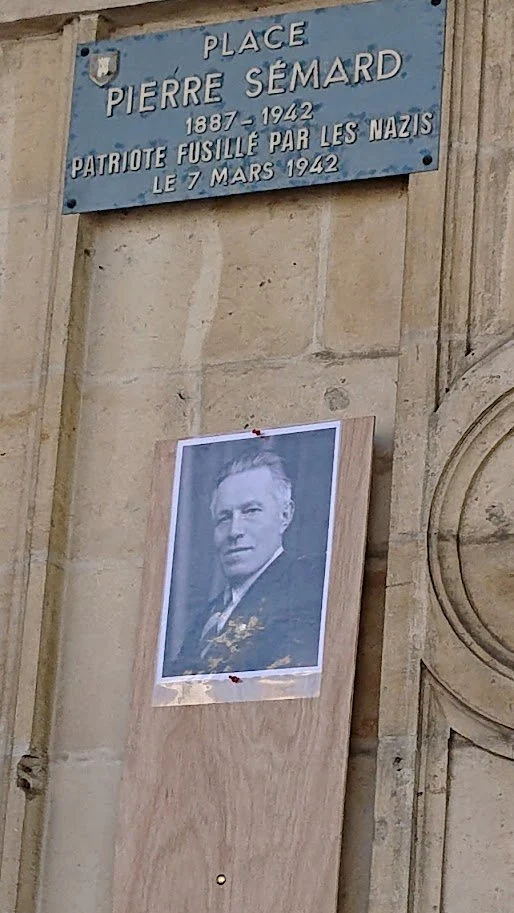
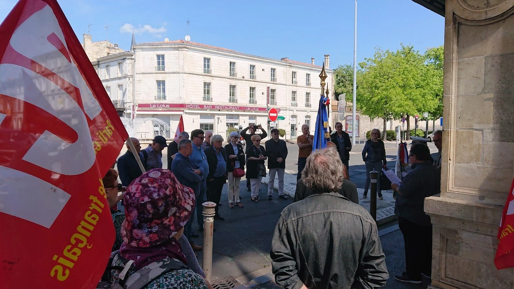
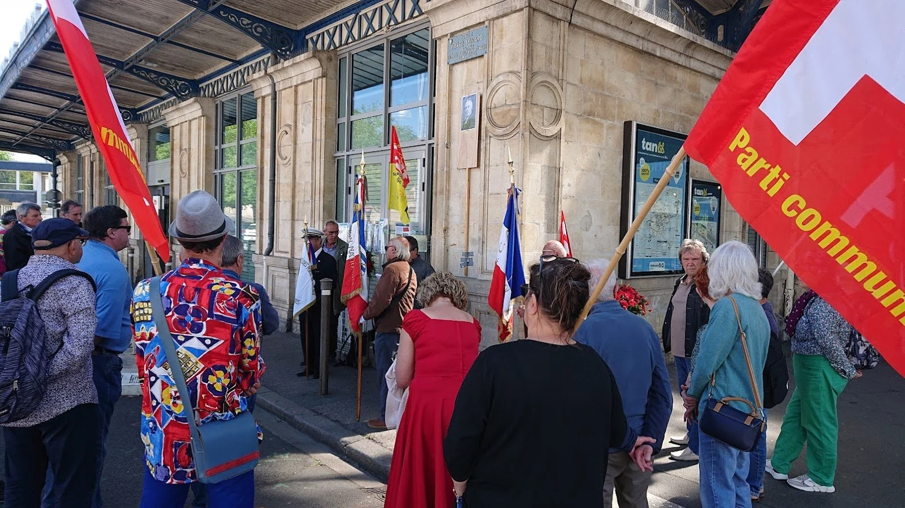
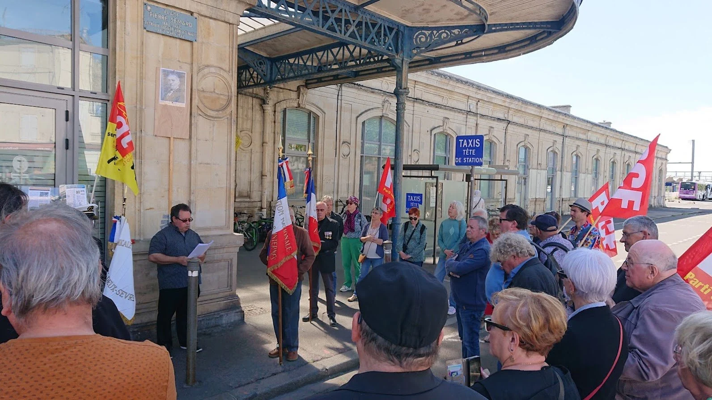

Compte rendu fédéral
À Niort, hommage à Pierre Sémard à la gare le 8 mai 2022
Date indiquée par Facebook · 9 mai 2022
Repères éditoriaux
Nous avons rendu hommage à Pierre Sémard devant la plaque commémorative de la gare de Niort. Six photos accompagnent le compte rendu de la cérémonie.
Texte conservé avec la publication
Cérémonie du 8 mai. Hommage des communistes à Pierre Sémard à la gare de Niort.
Pourquoi Pierre Sémard a-t-il une place éminente dans la mémoire collective ? Qu’a-t-il fait de si extraordinaire pour qu’une fois de plus, des militants et des cheminots en particulier, lui rendent un hommage, 80 ans après son exécution comme otage par l’occupant nazi ?
Qui était-il ? Né en 1887, en terre bourguignonne, dans un milieu modeste, très tôt confronté aux dures réalités du monde du travail, Pierre Sémard forge sa conscience au contact d’un monde cheminot déjà très politisé.
Fils d’un cheminot, cantonnier au chemin de fer et d’une garde-barrière, cheminot lui-même, Pierre Sémard est de ces hommes au destin d’exception.
Embauché en 1912, en gare de Valence, Pierre Sémard rejoint l’action syndicale et ses qualités humaines, son engagement désintéressé, lui valent vite l’estime de ses collègues de travail qui lui confient rapidement la responsabilité de créer le syndicat CGT.
Peu de temps après la « Grande guerre », homme de paix, internationaliste et communiste, avec d’autres militants révolutionnaires, Pierre Sémard s’oppose à l’Union sacrée du Parti Socialiste avec la CGT et fonde le « comité d’action contre l’impérialisme et la guerre ». C’est ainsi qu’en 1923, le militant politique qu’il est devenu, anime la lutte contre l’occupation de la Ruhr par les troupes françaises.
Arrêté avec Gabriel Péri, Gaston Monmousseau et d’autres militants communistes, puis incarcéré plusieurs mois, Pierre Sémard connaîtra plusieurs fois la privation de liberté avant sa fin tragique le 7 mars 1942 à la prison d’Evreux au terme d’une vie jalonnée de répressions.
Que reste-t-il de ses engagements, sans doute beaucoup pour forger les nôtres et pas seulement des noms de rues et places, souvent proches d’une gare, comme certains s’évertuent à nous le faire croire aujourd’hui pour mieux masquer les circonstances de sa révocation de la SNCF et de son arrestation sur accusation du gouvernement français, en avril 1940 ?
C’est bien sûr, tout à la fois, le militant ouvrier convaincu de la lutte de classe, le dirigeant syndical éminent, le dirigent du Parti communiste et le patriote que les auteurs du crime voulaient atteindre et par la même, toutes celles et tous ceux qu’il influençait.
On sait maintenant ce qu’il advint au lendemain de son assassinat, la Tribune des cheminots et l’Humanité, journaux édités alors en clandestinité, publient sa dernière lettre :
« Chers amis, Une occasion inespérée me permet de vous transmettre mon dernier mot, puisque dans quelques instants je serai fusillé. J'attends la mort avec calme. Je démontrerai à mes bourreaux que les communistes savent mourir en patriotes et en révolutionnaires.
Ma dernière pensée est avec vous, camarades de lutte, avec tous les membres de notre Grand Parti, avec tous les Français patriotes, avec les héroïques combattants de l'Armée Rouge. Je meurs certain de la victoire sur les fascistes et de la libération de la France. Dites à mes camarades cheminots que je les adjure de ne rien faire qui puisse aider les hitlériens. Les cheminots me comprendront et m’écouteront, ils agiront, j’en suis sûr.
Adieu, chers amis, l'heure de mourir approche. Mais je sais que les hitlériens, qui vont me fusiller, sont déjà vaincus et que la France saura poursuivre le grand combat.
Vivent l'Union Soviétique et ses Alliés !
Vive la France.
Pierre SÉMARD. »
A l’époque, son appel fut entendu et 26 mois ont suffi pour que la tempête irrésistible de l'insurrection nationale libère Paris et la France de la souillure du fascisme allemand et français. Des dizaines de milliers de résistants dont 8935 cheminots, peut-être plus, y laissèrent leur vie pour la paix, l’indépendance et la liberté.
Indigné, engagé, combattant toujours, Pierre Sémard vécut avec son temps mais il est aussi un homme de notre temps au sens où ses aspirations, ses utopies sont toujours d’actualité et qu’il nous reste beaucoup à faire pour continuer son combat.






Sources
Archive rouge · export Facebook · AR-0002-FB-01889
À lire aussi · À Niort, appel à l’hommage à Pierre Sémard le 8 mai